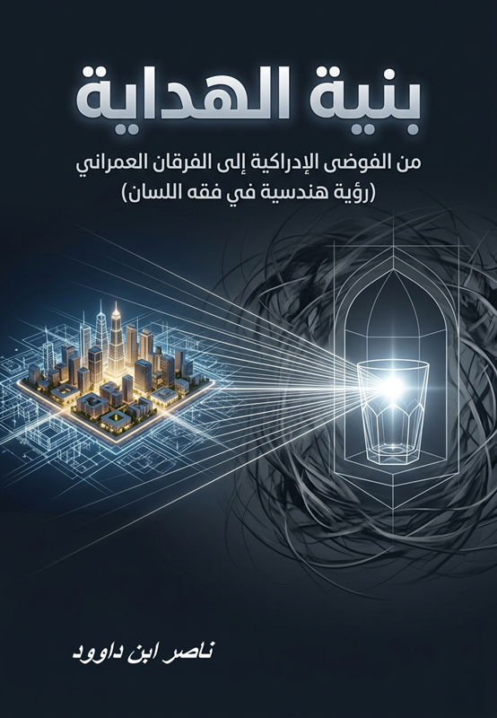

مدخل: أزمة ليست في النص… بل في الإدراك
لا تكمن أزمة العقل المسلم المعاصر في غياب النصوص، ولا في ندرة المعرفة، بل في خلل أعمق وأكثر خفاءً: خلل في أدوات الإدراك نفسها. لقد بقي النص حاضرًا، لكن قدرته على إعادة تشكيل الواقع تراجعت، ليس لأنه فقد فاعليته، بل لأن البنية التي تستقبله لم تعد تعمل كما ينبغي.
الانزياح الدلالي: على امتداد التاريخ، تعرّض اللسان القرآني إلى انزياح دلالي بنيوي تحوّلت بموجبه مفاهيمه الكبرى من أدوات تشغيلية دقيقة إلى استعارات وجدانية فضفاضة. فأصبح النور حالة شعورية غامضة بدل أن يكون معيارًا إدراكيًا، والقلب مركز انفعال بدل أن يكون وحدة معالجة معرفية، والفرقان ذكرى تاريخية بدل أن يكون خوارزمية لاتخاذ القرار.
أطروحة الكتاب: هذا الكتاب لا يسعى إلى تقديم تفسير تقليدي، ولا إلى إعادة إنتاج خطاب وعظي بصياغة حديثة، بل ينطلق من مشروع مختلف جذريًا: إعادة هندسة الوعي عبر استرداد البنية التشغيلية للسان القرآني. والفرضية المركزية أن القرآن الكريم يقدّم نظامًا معرفيًا متكاملًا لا يخاطب المشاعر كغاية، بل يعيد تشكيل بنية الإدراك لدى الإنسان.
ملخص الكتاب
يقدم هذا العمل قراءة بنيوية لمفاهيم الهداية الكبرى: النور، الظلمات، القلب، الفرقان، التزكية، التنزيل. يعيد اكتشافها ليس كمصطلحات لغوية بل كـوحدات وظيفية داخل نظام متكامل. ينتقل الكتاب من تشخيص الخلل (الانزياح الدلالي) إلى فهم آلية المعالجة (القلب) ثم هندسة القرار (الفرقان) وأخيرًا تفعيل السلوك والعمران.
ينتهي الكتاب إلى معادلة ختامية كبرى: الوحي → نور في القلب → فرقان في القرار → استقامة في السلوك → عمران في الواقع. وهي دعوة صريحة للانتقال من الدين كحالة وجدانية إلى الإسلام كنظام حياة، ومن النص المكتوب إلى إنسان قرآني يرى بوضوح، ويختار بوعي، ويتحرك بميزان.
أبرز مميزات الكتاب
- إعادة تعريف الدين: من منظومة اعتقاد إلى نظام تشغيل
- تحليل بنيوي للانزياح الدلالي في المفاهيم القرآنية الكبرى
- رؤية هندسية لفقه اللسان القرآني وإعادة برمجة الوعي
- معادلة الهداية: نور ← فرقان ← سلوك ← عمران
- تأسيس علم البنية الإدراكية القرآنية
- ربط الإدراك الفردي بالتحول الحضاري: من الفرد إلى العمران الراشد
- قراءة في سورة العلق في عصر الخوارزميات
- منهجية تجمع بين التحليل اللساني الدقيق والنفس الهندسي
فهرس المحتويات
التأسيس والتشخيص
فصول النظام (المسار)
الخاتمة الكبرى والتحولات
خاتمة الكتاب والإضاءات
💡 خلاصة الرؤية
“التحول الأكبر الذي يدعو إليه هذا الكتاب هو أن نكفّ عن التعامل مع القرآن كـ 'كتاب'، ونبدأ في التعامل معه كـ 'نظام' – نظام يعيد بناء الإنسان، وينظم العلاقات، ويوجه التاريخ. ليس هذا الكتاب دعوة إلى التدين بل إلى الاستنارة، وليس مشروعًا للنجاة الفردية فقط بل لبناء إنسانٍ قادر على حمل النور… وصناعة العمران.”
— ناصر ابن داوود، الدار البيضاء، أبريل 2026